“oResume” Documentation by “Ocholabs” v1.1
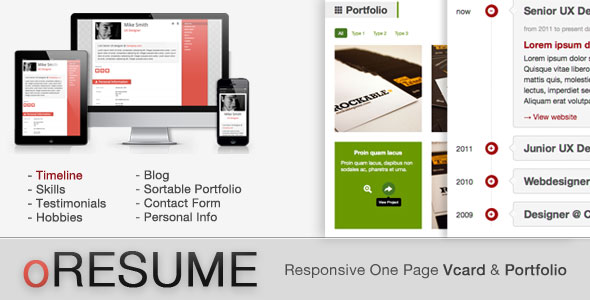
Created: 20/12/2012
By: Ocholabs
Email: contact@ocholabs.com
Thank you for purchasing my HTML template. If you have any questions that are beyond the scope of this help file, please feel free to email via my user page contact form here. Thanks so much!
Table of Contents
A) Configuration - top
If you want to configure the style of your Resume, follow these steps:
1) Skin
Following step is for php version only. If you use the HTML version, create your skin with the online demo
To make your life easier, oResume comes with a Skin Maker, just as in the demo website.
-- Activating the Skin Maker --
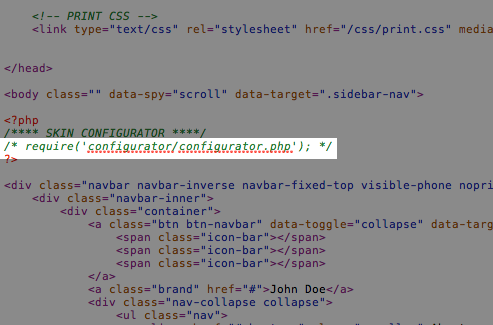
Open the index.php file and uncomment the highlighted line

Your file should look like this.
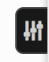Activating the Skin Maker reveals a new button in the top right corner of your resume.
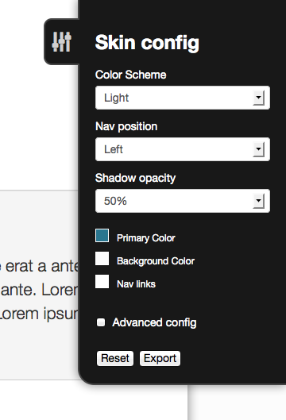When you click on it, you will see the Skin Maker panel.
-- Using the Skin Maker --
You can configure many different elements colors, but to make things easier, start by doing the basic changes
- Color Scheme: Choose light or dark (color scheme requirse some extra process listed further in the doc).
- Nav Position: Choose left or right (nav positionning requires some extra process listed further in the doc).
- Shadow Opacity: Set the Container's shadow opacity
- Primary Color: This is the template's primary color. In Basic mode, most of the advanced colors are defined automatically regarding this color.
- Background Color: Set a background color to your page. If you want no background color, use #fff for light skin and #1B1B1B for dark skin.
- Nav links: This is the color of the links in the navigation bar.
When the basic changes are done, turn on the Advanced Config by ticking the box. It will give you access to more precise element colors.
- Links: Color of links on mouse over
- Nav Background: Background of the navigation
- Nav Border & Active state: Color of the navigation Border & Active menu element
- Nav Liks Hover: Color of the nav links on mouse over
- Footer Text color: Color of the footer text
- Section title text: Color of the section titles
- Section Title Background: Background color of the section titles
- Section Title Border: Color of right border of the section titles
- Buttons Color: Background color of the buttons
- Buttons Color Hover: Background color of the buttons on mouse over
- Timeline Buttons: Background color of the timeline buttons
- Timeline Buttons Hover: Background color of the timeline buttons on mouse over
- Skills Progressbar Color (1) & (2): Colors of Skills progress bar (vertical gradient)
- Blog & Portf. hover background: This is the color of the Blog & Portfolio Items on mouse over
- Blog & Portf. hover text This is the text color of the Blog & Portfolio Items on mouse over
-- Exporting the Skin --
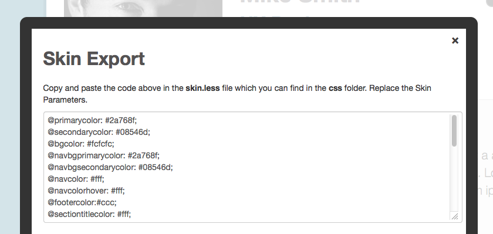
When you are happy with your skin, click the Export button. A modal Box will appear with the exported Skin Parameters. Copy the text from the textarea.
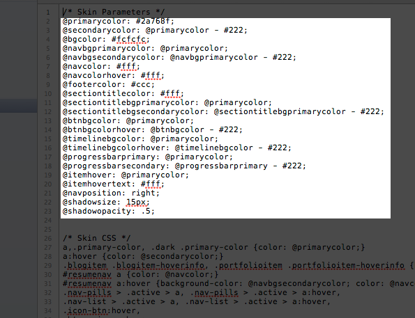Copy the text from the textarea. Open the skin.less file from the css folder and update the parameters by pasting the ones you just copied.
2) Color Scheme

To activate the dark color scheme, just add the dark class to the <body> element in the index.php
3) Nav Position
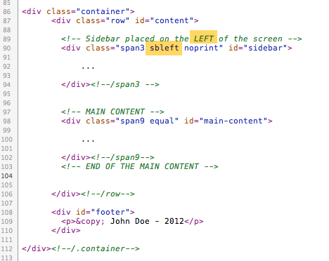For a left navigation, the #sidebar must be before the #main-content and you must add the sbleft class to #sidebar div.

For a right navigation, the #sidebar must be after the #main-content and you must add the sbright class to #sidebar div.
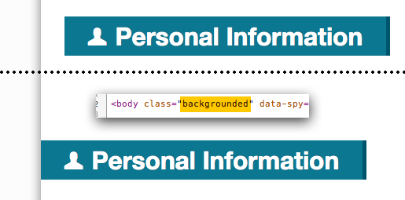If you use a right navigation, you can add the backgrounded class to the <body> element if you want the section titles to stick to the content limit.
B) Icons - top
oResume uses Glyphicons
Social Icons

The "Follow me" links have icons.
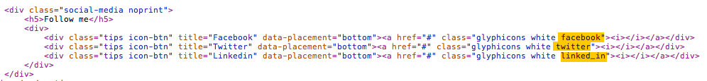Change the class to change the icon.

You can use many Social Networks and their dedicated class as listed above.
Section Titles
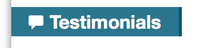Section titles can have icons.
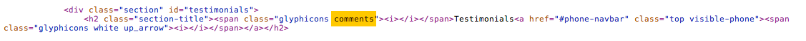Change the class to change the icon.
Hobbies Icons
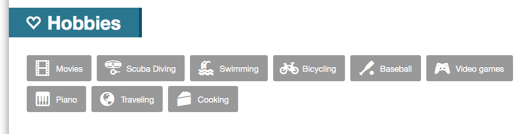Hobbies labels can have icons too.
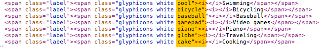Change the class to change the icon.
All available icons are listed below


C) Portfolio - top
1) - Filters
oResume includes a portfolio. Filterings are provided by the isotope plugin
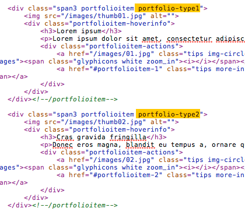Set a class to the portfolio items for each available filters.
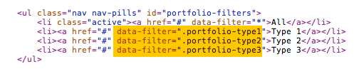then fill the data-filter attribute of the filters with the class of the portfolio items
2) - Preview & Full articles
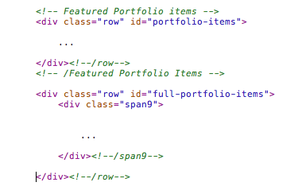Preview & Full items are in different divs.
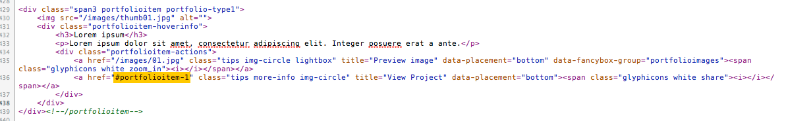Preview items must link to the full item's ID
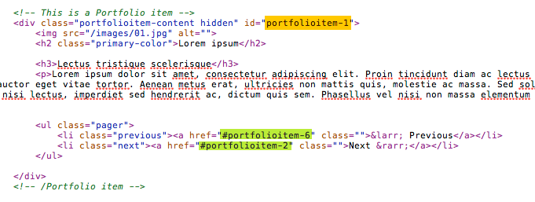In yellow, the ID of the Item.
The Full item can although link to previous and next items. The navigation links must link to desired Portfolio IDs (green).
D) Blog - top
Blog navigation (preview -> Full item) works the same way as Portfolio items.
E) Timelines - top
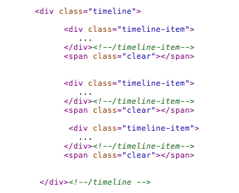Timeline items (.timeline-item) must be children of a timeline element (.timeline).
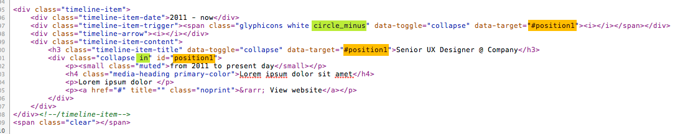Timeline items toggling is provided by Twitter Bootsrap's javascript plugins. Set the toggle triggers with data-toggle="collabse" and assign target's ID in the data-target attribute
If you add the in class to the .collapse element (to make it opened), then make sur to use the circle_minus class ti the timeline trigger item. If you want to keep it closed, don'add the in and iuse circle_plus instead of circle_minus
F) Contact Form - top
PHP version
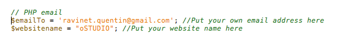On line 901 / 902 of index.php you will need to edit the email and website variables.
HTML version
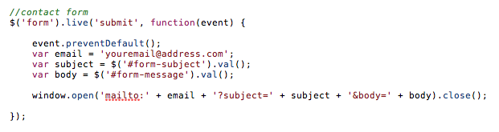On line 7 of scripts.js you will need to edit the email variable. Take note that the HTML version cannot send the form directly. It will send data to the client email software.
Thank You
Once again, thank you so much for purchasing this HTML template. As I said at the beginning, I'd be glad to help you if you have any questions relating to this theme. No guarantees, but I'll do my best to assist.
OCHOLABS